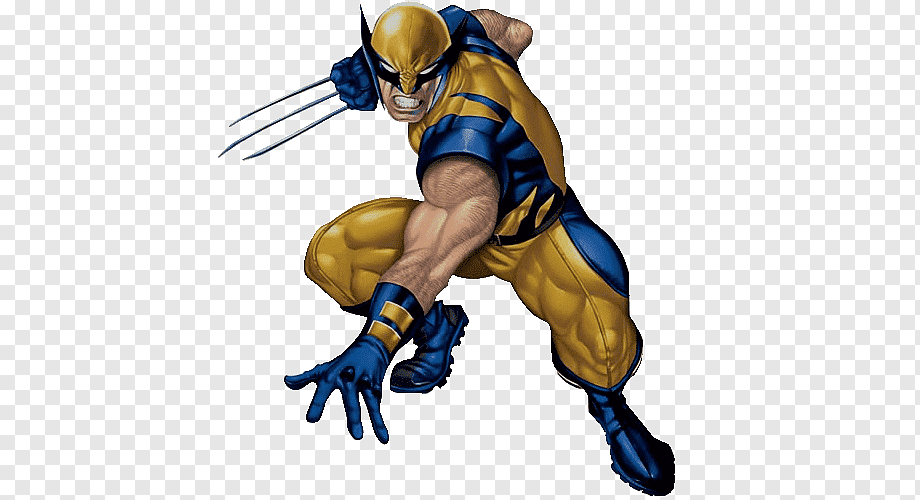

Wolverine, cuyo nombre de nacimiento es James Howlett (también conocido como James Logan o simplemente Logan), es un superhéroe y antihéroe ficticio que aparece en los cómics publicados por Marvel Comics, principalmente en asociación con los X-Men. Es un mutante que posee sentidos afinados a los animales, capacidades físicas mejoradas, poderosa capacidad de regeneración conocida como un factor de curación, y tres garras retráctiles en cada mano. Wolverine ha sido representado de diversas formas como miembro de los X-Men, Alpha Flight, Fuerza-X y Los Vengadores.